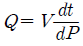
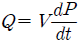
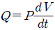
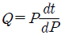
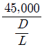
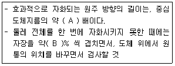
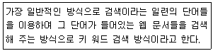

자기비파괴검사산업기사(구) (2010-07-25 기출문제)
1과목: 자기탐상시험원리
1. 자분탐상시험의 잔류법을 이용하여 검사하기가 부적당한 제품은?
- 보자성이 높은 제품
- 탄소함량이 적은 제품
- 소형으로서 다량인 제품
- 탈자가 어려운 제품
(정답률: 알수없음)

2. 프로드법에 대한 설명으로 틀린 것은?
- 자속의 분포는 전류분포에 직각으로 교차한다.
- 자속의 분포는 판두께와 프로드 간격에 영향을 받는다.
- 프로드는 극간법과 상호 대치하는 성격의 것이다.
- 프로드의 전극주위에는 결함에 자분모양이 형성되지 않는 영역이 있다.
(정답률: 알수없음)
3. 막대형 영구자석을 구부려 환형 고리로 녹여 용접하면 어떻게 되는가?
- 자계가 외부에만 골고루 퍼진다.
- 자계가 모두 내부에만 있게 된다.
- 자계가 내부 및 외부에 모두 흐른다.
- 자계가 전혀 발생하지 않는다.
(정답률: 알수없음)
4. 길이 230mm(9인치), 외경 75mm(3인치)인 파이프(Pipe)형태의 철강제품을 코일법(Coil)으로 탐상할 때 코일의 권수를 5회로 한다면 필요한 자화전류는?
- 300A
- 900A
- 1500A
- 3000A
(정답률: 알수없음)
5. 자분탐상시험의 잔류법에서 자화가 끝난 시험체에 다른 시험체나 강자성체를 접촉시켰을 때 나타나는 의사지시 모양은?
- 자기펜 흔적
- 자극지시
- 단면급변지시
- 오염지시
(정답률: 알수없음)
6. 강자성체의 투과율에 영향을 미치는 요인이 아닌 것은?
- 가공 상태
- 표면 상태
- 열처리 상태
- 작용시킨 자계의 세기
(정답률: 알수없음)
7. 방사선투과시험에서 표준 정착액의 주기능이 아닌 것은?
- 정착
- 환원
- 촉진
- 보항
(정답률: 알수없음)
8. 누설검사법 중 대형 용기나 저장조 검사에 이용되지만 누설위치의 측정에는 적합하지 않은 검사법은?
- 기포누설시험
- 헬륨누설시험
- 할로겐누설시험
- 압력변화누설시험
(정답률: 알수없음)
9. 자분탐상시험에서 결함을 검출하기 위하여 갖추어야 할 특성과 거리가 먼 것은?
- 결함의 위치
- 결함의 방향
- 시험체의 크기
- 시험체의 자기적 특성
(정답률: 알수없음)
10. 누설율을 구하는 식으로 옳은 것은? (단, P : 기체의 압력, Q : 누설율, V : 상자의 부피, t : 기체를 모으는 시간이다.




(정답률: 알수없음)
11. 비파괴검사의 필요성으로 보기 어려운 것은?
- 제작공정 과정을 개선
- 제작공정 중 물량을 제거
- 구조물의 파괴를 미연에 방지
- 결함이 검출되지 않는 무결함 제품을 생산
(정답률: 알수없음)
12. 여과입자법(Filtered Particle Test)의 설명으로 틀린 것은?
- 검사 후 소립자의 제거가 쉽다.
- 반드시 형광법으로 검사를 하여야 한다.
- 콘크리트, 내화물, 석물(돌)등 다공성 재료에 적용한다.
- 무색의 액체에 색이 있는 소립자나 형광입자를 현탁하여서
(정답률: 알수없음)
13. 시험체의 온도가 0℃ 일 때 검사하기 가장 어려운 비파괴검사법은?
- 방사선투과시험
- 초음파탐상시험
- 자분탐상시험
- 침투탐상시험
(정답률: 알수없음)
14. 결함부와 이에 적합한 비파괴검사법의 연결이 틀린 것은?
- 강재의 표면결함 - 자분탐상시험법
- 경금속의 표면결함 - 침투탐상시험법
- 용접내부의 기공 - 와전류탐상시험법
- 단조품의 내부결함 - 초음파탐상시험법
(정답률: 알수없음)
15. 침투탐상시험법과 비교한 자분탐상시험법의 장점으로 틀린것은?
- 표면직하의 결함 검출이 가능하다.
- 검사 후 탈자를 실시하지 않는 장점이 있다.
- 침투탐상보다는 정밀한 전처리가 요구되지 않는다.
- 얇은 도장 및 도금된 시험체에도 검사가 가능하다.
(정답률: 알수없음)
16. 비파괴검사(NDT)의 종류가 아닌 것은?
- 육안검사(Visual Test)
- 부식시험(Etching Test)
- 와전류탐상시험(Eddy Current Test)
- 음향방출시험(Acoustic Emission Test)
(정답률: 알수없음)
17. 와전류탐상시험과 비교할 때 침투탐상시험시 신뢰성이 떨어지는 것은?
- 결함의 길이 측정
- 결함의 종류 판별
- 선형결함의 형상 파악
- 선형결함의 깊이 측정
(정답률: 알수없음)
18. 초음파의 성질을 옳게 설명한 것은?
- 물체내부에서 X선 보다도 전달되기 어렵다.
- 파장이 가청음 보다 길어 직진성을 갖는다.
- 광파보다 파장이 길고 전파보다 파장이 짧다.
- 고체내부에서는 종파만 전달되고 횡파는 전달되기 어렵다.
(정답률: 알수없음)
19. 방사선투과시험으로 불연속의 깊이를 알고자 할 때 사용되는 검사법은?
- 자동 방사선투과시험(Auto Radiography)
- 미세 방사선투과시험(Micro Radiography)
- 중성자 방사선투과시험(Neutron Radiography)
- 파라렉스 방사선투과시험(Parallax Radiography)
(정답률: 알수없음)
20. 압연 강판에 존재하는 라미네이션의 불연속을 검출하는데 가장 효과적인 비파괴검사법은?
- 방사선투과시험
- 자기탐상시험
- 초음파탐상시험
- 침투탐상시험
(정답률: 알수없음)
2과목: 자기탐상검사
21. 직경 2인치, 길이 10인치 인 환봉을 코일로 5회 감아 선형자화할 때 필요한 전류(A)는?
- 1000
- 1800
- 3000
- 3500
(정답률: 알수없음)
22. 강괴(Ingot)에 들어있는 파이프, 기공, 개재물 등이 압연과정에서 외면과 평행하고 널찍하게 되어 판재에 존재하는 불연속은?
- 심(Seam)
- 균열(Crack)
- 라미네이션(Lamination)
- 라멜라 테어(Lamellar Tear)
(정답률: 알수없음)
23. 자분탐상검사법 중 코일 속에서 시험체를 자화시킬 경우 발생되는 자계는?
- 원형자계
- 선형자계
- 벡터자계
- 잔류자계
(정답률: 알수없음)
24. 자분탐상검사에서 판독 후에 하는 후처리 사항이 아닌 것은?
- 탈자를 한다.
- 자분을 제거한다.
- 자분의 농도를 측정한다.
- 시험을 위해 분해했던 것이 있으면 원위치로 조립해 놓는다.
(정답률: 알수없음)
25. 자분탐상검사에서 시험체의 구멍으로 통과한 강자성체에 교류자속을 가함으로써 시험체에 유도전류를 흐르게 하는 자화방법은?
- 축통전법
- 직각통전법
- 전류관통법
- 자속관통법
(정답률: 알수없음)
26. 자분탐상검사의 자화조작 단계에 해당하지 않는 것은?
- 통전시간의 결정
- 자화방법의 선정
- 전처리방법의 선정
- 자화전류의 종류와 전류값의 선정
(정답률: 알수없음)
27. 휴대형 교류 극간식 탐상기를 이용하여 강용접부를 탐상하는 경우 적절한 탐상 피치는?
- 1인치
- 3인치
- 자극 폭과 동일 길이
- 자극 폭의 약 2배 길이
(정답률: 알수없음)
28. 자분탐상검사 후 시험체의 탈자상태를 점검할 때 사용할 수있는 기구는?
- 코일
- 전력계
- 말굽자석
- 소형 나침판
(정답률: 알수없음)
29. 자화방법과 검출 가능한 결함의 위치가 옳게 설명된 것은?
- 코일법은 봉제품의 원주방향 결함 검출에 효과적이다.
- 전류관통법은 내면 원주방향 결함 검출에 효과적이다.
- 프로드법은 비드 방향과 평행인 결함 검출에 효과적이다.
- 극간법은 두 자극 사이에 평행한 결함 검출에 효과적이다.
(정답률: 알수없음)
30. 외경 150mm, 내경 130mm 인 실린더형 시험체를 직경 20mm구리봉으로 전류관통법을 사용하여 검사하려 한다. 이 때 시험체의 외부 표면 전체를 검사하기 위해서는 최소한 몇회 이상으로 나누어 검사해야 하는가?
- 3회
- 4회
- 5회
- 6회
(정답률: 알수없음)
31. 표면 미세결함 검출에 우수한 자분탐상검사법의 조합은?
- 건식-직류
- 습식-직류
- 건식-교류
- 습식-교류
(정답률: 알수없음)
32. 다음 중 투자율이 가장 낮은 시험체는?
- 철(Fe)
- 니켈(Ni)
- 코발트(Co)
- 알루미늄(Al)
(정답률: 알수없음)
33. 같은 지점에 극을 설정하여 탐상시 프로드 방식과 요크 방식에서 검출하기 용이한 결함 방향을 옳게 설명한 것은?
- 요크 극의 연장선에 평행 방향의 결함
- 프로드 극의 연장선에 평행 방향의 결함
- 프로드와 요크 모두 극의 연장선에 직각 방향의 결함
- 프로드와 요크 모두 극의 연장선에 평행 방향의 결함
(정답률: 알수없음)
34. 실린더형 튜브와 같이 속이 빈 환봉의 시험체에 원형 자계를 발생시키는 방법으로 가장 적합한 방법은?
- 프로드법
- 시험체에 직접 전류를 흘리는 축통전법
- 시험체 내부에 도체를 관통시키는 전류관통법
- 솔레노이드 코일내에 시험체를 삽입시키는 코일법
(정답률: 알수없음)
35. 영구자석을 이용한 요크 장비에 관한 설명 중 틀린 것은?
- 전원이 없는 곳에서도 사용할 수 있다.
- 아크로 인한 시험체의 손상이 우려되지 않는다.
- 시험체를 자화시킨 후 시험체에서 떼어내기가 어렵다.
- 인상력(Lifting Power)이 작을수록 탐상에 유리하다.
(정답률: 알수없음)
36. 자분탐상검사법 중 시험체의 손상에 대한 우려가 가장 적은 것은?
- 극간법
- 프로드법
- 전류관통법
- 직접접촉법
(정답률: 알수없음)
37. 코일법으로 직경 50mm, 길이 125mm 인 환봉을 자분탐상검사법으로 검사할 때 요구되는 자화전류가 3600A 라면 시험체에 코일을 몇 회 감아야 하는가?
- 3회
- 4회
- 5회
- 6회
(정답률: 알수없음)
38. 자분탐상검사시 극이나 전류 방향이 주기적으로 바뀌는 전류는?
- 직류
- 반파전류
- 교류
- 전파정류
(정답률: 알수없음)
39. 실린더를 전류관통법으로 자분탐상검사할 때 자계의 세기가 가장 강한 부분은?
- 실린더의 양 끝단
- 실린더의 바깥표면
- 실린더 두께 중앙부위
- 실린더의 내부표면
(정답률: 알수없음)
40. 시험체의 자기특성, 탈자의 정도 등을 측정하는 계측기가 아닌 것은?
- 자속계
- 가우스미터
- 자기컴퍼스
- 사이리스터
(정답률: 알수없음)
3과목: 자기탐상관련규격및컴퓨터활용
41. 철강 재료의 자분탐상 시험방법 및 자분모양의 분류(KS D0213)에서 자화전류의 설정시 시험체의 외경 또는 두께가 미치는 영향이 가장 작은 자화 방법은?
- 축통전법
- 프로드법
- 직각통전법
- 전류관통법
(정답률: 알수없음)
42. 철강 재료의 자분탐상 시험방법 및 자분모양의 분류(KS D0213)에 의한 자분모양의 분류에서 선상의 자분모양 및 원형상의 자분모양은 어떤 분류에 속하는가?
- 연속한 자분모양
- 독립한 자분모양
- 분산한 자분모양
- 균열에 의한 자분모양
(정답률: 알수없음)
43. 철강 재료의 자분탐상 시험방법 및 자분모양의 분류(KS D0213)에서 자분의 현탁성을 나타내는 철강속도 분포를 구하는 방법으로 적당한 것은?
- 천칭법
- 대조법
- 침전법
- 블로법
(정답률: 알수없음)
44. 보일러 및 압력용기에 대한 표준자분탐상검사(ASME Sec.V Art.25 SE-709)에 따라 탐상 후 탈자를 했을 때 별도의 규정이 없다면 탈자 후 제품은 자장계로 측정하여 몇 가우스(G)를 넘지 않아야 하는가?
- 1
- 3
- 10
- 30
(정답률: 알수없음)
45. 보일러 및 압력용기에 대한 자분탐상검사(ASME Sec.V Art.7)에 따라 탐상을 실시할 때 시험체의 길이 9인치, 직경 3인치 인 강봉을 5회 감아 선형자화법으로 자화할 때 요구되는 자화전류는?
- 1000A
- 3000A
- 5000A
- 9000A
(정답률: 알수없음)
46. 철강 재료의 자분탐상 시험방법 및 자분모양의 분류(KS D 0213)와 보일러 및 압력용기에 대한 자분탐상검사(ASME Sec.V Art.7)에 따른 자분모양의 관찰에서 형광자분을 사용할 경우 시험체 관찰 면에서 최소 자외선강도를 각각 어떻게 규정하고 있는가?
- KS : 800μW/cm2, ASME : 800μW/cm2
- KS : 800μW/cm2, ASME : 1000μW/cm2
- KS : 1000μW/cm2, ASME : 800μW/cm2
- KS : 1000μW/cm2, ASME : 1000μW/cm2
(정답률: 알수없음)
47. 보일러 및 압력용기에 대한 자분탐상검사(ASME Sec.V Art.7)에 따른 자화 장치의 교정주기와 장치 계기의 허용오차 범위를 옳게 나타낸 것은?
- 교정 주기 : 2년, 허용 오차 : ±5%
- 교정 주기 : 1년, 허용 오차 : ±10%
- 교정 주기 : 1년, 허용 오차 : ±15%
- 교정 주기 : 2년, 허용 오차 : ±15%
(정답률: 알수없음)
48. 보일러 및 압력용기에 대한 자분탐상검사(ASME Sec.VArt.7)에서 다음과 같은 식을 사용하는 자화방법은? (암페어턴 A.T=

)- 원형자화
- 선형자화
- 평행자화
- 벡터자화
(정답률: 알수없음)
49. 철강 재료의 자분탐상 시험방법 및 자분모양의 분류(KS D0213)에 따른 자화방법과 그 부호가 잘못 연결된 것은?
- 코일법 : C
- 극간법 : N
- 자속관통법 : I
- 직각통전법 : EA
(정답률: 알수없음)
50. 보일러 및 압력용기에 대한 자분탐상검사(ASME Sec.V Art.7)에 따라 백색광 및 형광의 측정을 위한 조도계는 수리되었을 때마다 교정을 실시하여야 하며 또한 최대 얼마의 기간마다 교정을 실시하여야 하는가?
- 1개월
- 6개월
- 1년
- 2년
(정답률: 알수없음)
51. ASME Sec.V Art.7 '자분탐상검사' 에 따라 습식자분의 농도를 측정할 때 물베이스 현탁액 침전시간의 규정으로 옳은 것은?
- 5분
- 10분
- 1년
- 2년
(정답률: 알수없음)
52. 철강 재료의 자분탐상 시험방법 및 자분모양의 분류(KS D0213)에 따른 자화방법의 설명 중 틀린 것은?
- 축통전법 : 시험체의 축방향으로 직접 전류를 흐르게 한다.
- 코일법 : 시험체를 코일 속에 넣어 코일에 전류를 흐르게 한다.
- 전류관통법：시험체의 축에 대하여 직각 방향으로 직접 전류를 흐르게 한다.
- 자속관통법 : 시험체의 구멍 등에 통과시킨 자성체에 교류자속을 가해 시험체에 유도전류를 흐르게 한다.
(정답률: 알수없음)
53. 항공 우주용 자기탐상 검사방법(KS W 4041)의 원형자화에 대한 다음 설명 중 ( )안에 알맞은 수치로 옳은 것은?

- A : 2 B : 50
- A : 4 B : 10
- A : 1 B : 30
- A : 3 B : 20
(정답률: 알수없음)
54. 보일러 및 압력용기에 대한 자분탐상검사(ASME Sec.V Art.7)에 따라 교류를 이용하는 극간법의 경우 최대 극간거리에서 최소 몇 파운드의 인상력을 가져야 하는가?
- 5
- 10
- 18
- 40
(정답률: 알수없음)
55. 배관용접부의 비파괴시험 방법(KS B 0888)에 따라 관용접부를 탐상시험할 때 전처리 범위는 용접선 양끝에서 모재쪽 바깥면으로 얼마나 넓게 잡아야 하는가?
- 6mm
- 12mm
- 18mm
- 25mm
(정답률: 알수없음)
56. 다음이 설명하고 있는 웹 페이지 검색엔진의 유형으로 옳은 것은?

- 주제별 검색
- 메뉴 검색
- 웹 인덱스 검색
- 지능형 검색
(정답률: 알수없음)
57. 제어프로그램(Control Program)은 운영체제의 중심이 되는 프로그램으로 시스템 전체의 작동상태를 관리하는 소프트웨어이다. 다음 중 제어프로그램에 해당하지 않는 것은?
- 언어번역기(Language Translator)
- 데이터 관리 프로그램(Data Management Program)
- 감독자 프로그램(Supervisor Program)
- 작업관리 프로그램(Job Management Program)
(정답률: 알수없음)
58. E-mail의 송수신에 관련된 프로토콜이 아닌 것은?
- POP3
- IMAP
- PPP
- SMPT
(정답률: 알수없음)
59. 인터넷의 표준 주소 방식인 URL에 포함되지 않는 정보는?
- 통신 포트 번호
- 프로토콜
- 접속할 호스트 이름
- 전송 속도
(정답률: 알수없음)
60. 중앙 처리 장치의 기능이 아닌 것은?
- 기억
- 전달
- 제어
- 입출력
(정답률: 알수없음)
4과목: 금속재료 및 용접일반
61. 실용되고 있는 형상 기억 합금계가 아닌 것은?
- Cu-Zn-Al계
- Cu-Al-Ni계
- Co-Mn계
- Ti-Ni계
(정답률: 알수없음)
62. 마그네슘 합금의 특징을 설명한 것 중 틀린 것은?
- 감쇠능이 주철보다 커서 소음방지 구조재로서 우수하다.
- 소성가공성이 높아 상온변형이 쉽다.
- 주조용 합금은 Mg-Al 및 Mg-Zn 합금 등이 있다.
- 가공용 합금은 Mg-Mn 및 Mg-Al-Zn 합금 등이 있다.
(정답률: 알수없음)
63. 오스테나이트계 스테인리스강의 공식을 방지하기 위한 대책이 아닌 것은?
- 할로겐 이온의 고농도를 피한다.
- 액의 산화성을 감소시키거나 공기의 투입을 많게 한다.
- 질산염, 크롬산염 등의 부동태화제를 첨가한다.
- 재료 중의 탄소를 적게 하거나 Ni, Cr, Mo 등을 많게 한다.
(정답률: 알수없음)
64. 다음 중 주철의 성장 원인이 아닌 것은?
- 페라이트 조직 중의 Si의 산화
- 펄라이트 조직 중의 Fe3C 분해에 따른 흑연화
- A1 변태의 반복과정에서 오는 체적변화에 기인되는 미세한 균열의 발생
- 흡수된 가스의 수축에 따른 부피감소
(정답률: 알수없음)
65. 열팽창계수가 상온부근에서 매우 작아 샤도우마스크, IC 기판 등에 사용되는 Ni계 합금은?
- 하스텔로이(Hastelloy)
- 인바(Invar)
- 알루멜(Alumell)
- 인코넬(Inconell)
(정답률: 알수없음)
66. Fe-C 상태도에서 나타내는 변태점과 그 온도가 틀리게 짝지어진 것은?
- A0점 : 약 210℃
- A1점 : 약 723℃
- A2점 : 약 868℃
- A3점 : 약 910℃
(정답률: 알수없음)
67. 상온에서 알루미늄합금의 결정구조는?
- 단순입방격자
- 체심입방격자
- 면심입방격자
- 조밀육방격자
(정답률: 알수없음)
68. 금속간 화합물인 Fe3C에서 Fe와 C의 원자비(%)는?
- Fe : 25%, C : 75%
- Fe : 30%, C : 70%
- Fe : 70%, C : 30%
- Fe : 75%, C : 25%
(정답률: 알수없음)
69. 냉간가공에 비해 열간가공하였을 때의 장범이 아닌 것은?
- 강괴 중의 기포가 압착된다.
- 적은 힘으로도 많은 변형을 가져온다.
- 가공 중에 고온유지로 편석이 경감된다.
- 제품의 표면이 아주 미려하고 치수가 정밀하다.
(정답률: 알수없음)
70. 소성가공한 금속을 가열하였을 때 결정립의 모양과 결정방향이 변하지 않고, 기계적 성질, 물리적 성질만 변화하는 과정을 무엇이라고 하는가?
- 연화
- 회복
- 재결정
- 다각화
(정답률: 알수없음)
71. 각 변형의 방지 대책으로 틀린 것은?
- 개선 각도는 작업에 지장이 없는 한도 내에서 작게 하는 것이 좋다.
- 판 두께가 얇을수록 첫 패스 측의 개선깊이를 작게 하는 것이 좋다.
- 용접속도가 빠른 용접법을 이용한다.
- 역변형의 시공법을 사용한다.
(정답률: 알수없음)
72. 전격으로 인한 감전사고 시 약 몇 mA 이상의 전류가 흐르는 경우 사망의 위험이 있는가?
- 50
- 15
- 20
- 30
(정답률: 알수없음)
73. 용접법 중 저항용접에 속하는 것은?
- 프로젝션 용접
- 전자빔 용접
- 테르밋 용접
- 초음파 용접
(정답률: 알수없음)
74. 가스용접에 사용되는 가스 중 불꽃온도가 가장 높은 것은?
- 메탄
- 프로판
- 수소
- 아세틸렌
(정답률: 알수없음)
75. 용접부의 잔류응력 완화법 중 응력 제거 풀림 처리를 했을 때의 효과에 대한 설명으로 틀린 것은?
- 응력 부식에 대한 저항력의 증대
- 강도의 증대
- 열영향부의 뜨임 연화
- 충격저항의 감소
(정답률: 알수없음)
76. 교류 용접기 아크 출력이 6kW이고 내부 손실이 4kW일 때 용접기 효율은 몇 % 인가?
- 40%
- 50%
- 60%
- 80%
(정답률: 알수없음)
77. 구조상의 결함인 기공을 검사하는 방법이 아닌 것은?
- 방사선 투과 검사
- 와류 탐상 검사
- 초음파 탐상 검사
- 외관 검사
(정답률: 알수없음)
78. 직류아크 용접에서 정극성에 대한 설명으로 틀린 것은?
- 비드 폭이 좁다.
- 모재의 용입이 얕다.
- 용접봉의 녹음이 느리다.
- 모재에(+)극 용접봉에(-)극을 연결한다.
(정답률: 알수없음)
79. 플래시 버트 용접의 특징을 설명한 것으로 틀린 것은?
- 신뢰도가 높고 이음강도가 크다.
- 가열부의 열영향부가 좁으며, 용접시간이 짧다.
- 이종 재료의 용접은 불가능하다.
- 전기 용량이 동일한 큰 물건의 용접이 가능하다.
(정답률: 알수없음)
80. 테르밋(Thermit)반응이란 금속 산화물이 어떤 금속에 의하여 산소를 빼앗기는 반응을 말하는 것인가?
- Pb
- Sn
- Al
- Zn
(정답률: 알수없음)